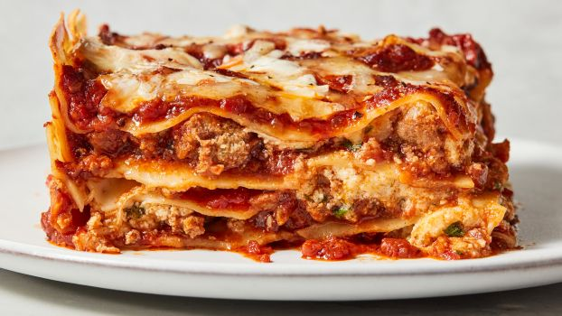

Home
Lasagna Recipe

Description
Lasagna is a classic Italian dish featuring layers of pasta, rich meat sauce, creamy béchamel
or ricotta cheese, and melted mozzarella. Each layer is carefully built to create a dish that is hearty,
flavorful, and comforting. The meat sauce, usually made from ground beef or a mix of beef and pork, is simmered
with tomatoes, garlic, onions, and Italian herbs to infuse a deep, savory flavor. Meanwhile, the cheese layers
add creaminess that balances the tangy tomato sauce.
Once assembled, the lasagna is baked in the oven until bubbly and golden on top. The pasta absorbs the flavors
of the sauce and cheese, creating a tender, cohesive dish. Lasagna is perfect for family dinners or special
occasions, as it is filling, satisfying, and can be made ahead of time for convenience.
Ingredients
- 9-12 lasagna noodles
- 1 pound ground beef
- 1 small onion, finely chopped
- 2-3 cloves garlic, minced
- 1 (24 oz) jar of tomato sauce or marinara
- 1 teaspoon dried basil
- 1 teaspoon dried oregano
- Salt and pepper, to taste
- 1 cup ricotta cheese
- 2 cups shredded mozzarella cheese
- 1/2 cup grated Parmesan cheese
- 2 tablespoons olive oil
Steps
- Preheat the oven to 375°F (190°C).
- Cook lasagna noodles according to package instructions, then drain and set aside.
- In a skillet, heat olive oil over medium heat. Sauté the onions and garlic until translucent.
- Add the ground beef, cooking until browned. Drain excess fat if necessary.
- Stir in tomato sauce, basil, oregano, salt, and pepper. Simmer for 10–15 minutes to develop flavor.
- Spread a thin layer of meat sauce in the bottom of a baking dish. Layer noodles on top, then spread ricotta
cheese, meat sauce, and a portion of mozzarella. Repeat layers until all ingredients are used, finishing
with mozzarella and Parmesan on top.
- Cover with aluminum foil and bake for 25 minutes. Remove foil and bake an additional 15 minutes until the
cheese is bubbly and golden.
- Let lasagna rest for 10 minutes before slicing and serving.